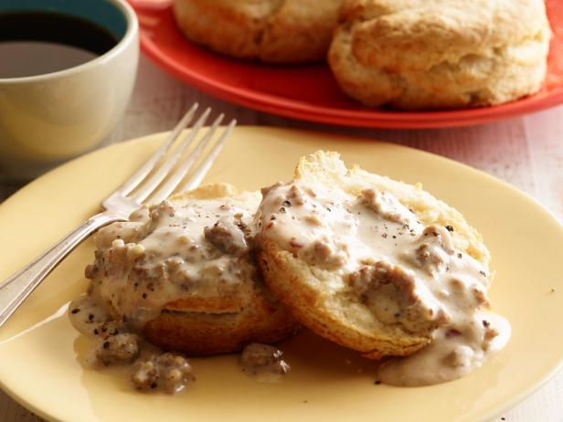

Sausage Gravy

Description
Sausage gravy is a rich, creamy sauce made by browning breakfast sausage,
adding flour to thicken, and simmering with milk. It's often served over
biscuits for a comforting and savory breakfast or brunch option. The sausage adds robust flavors,
while the creamy texture creates a satisfying and indulgent experience.
Ingredients
- 1 pound breakfast sausage, hot or mild
- 1/3 cup all-purpose flour
- 3 to 4 cups whole milk, more to taste
- 1/2 teaspoon seasoned salt
- 2 teaspoons freshly ground black pepper, more to taste
- Biscuits, warmed, for serving
Steps
-
With your finger, tear small pieces of sausage and add them in a single layer to a large heavy skillet.
Brown the sausage over medium-high heat until no longer pink. Reduce the heat to medium-low.
Sprinkle on half the flour and stir so that the sausage soaks it all up, then add more little by little.
Stir it around and cook it for another minute or so, then pour in the milk, stirring constantly.
-
Cook the gravy, stirring frequently, until it thickens. (This may take a good 10 to 12 minutes.)
Sprinkle in the seasoned salt and pepper and continue cooking until very thick and luscious.
If it gets too thick too soon, just splash in another 1/2 cup of milk or more if needed.
Taste and adjust the seasoning.
-
Spoon the sausage gravy over warm biscuits and serve immediately!
Return to main page